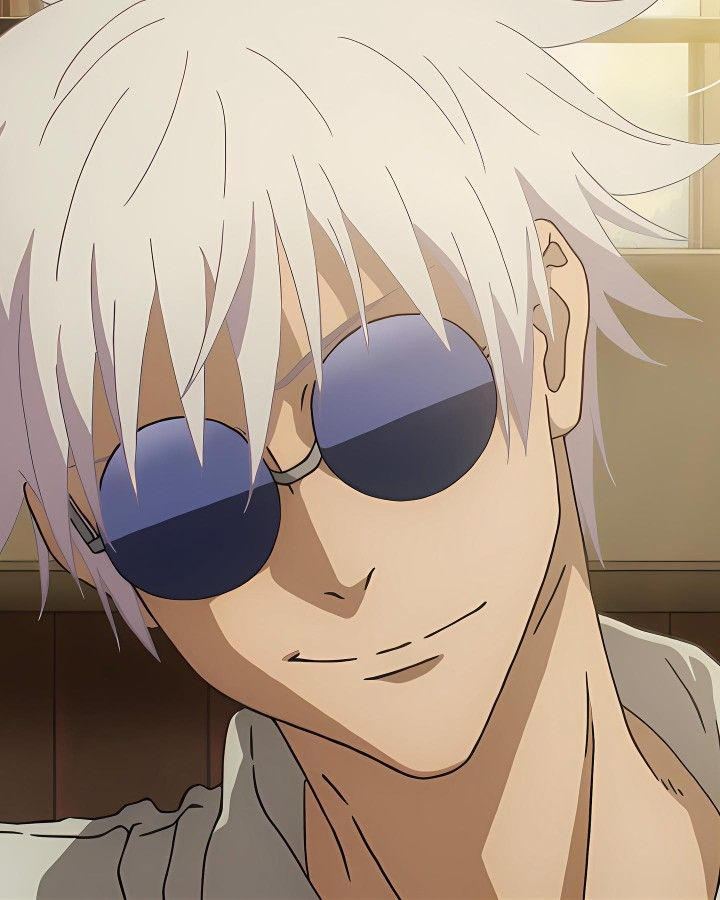
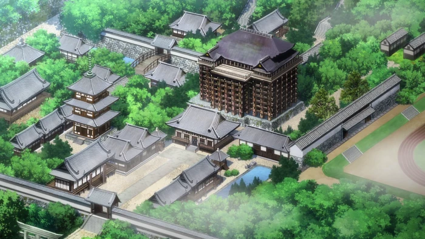
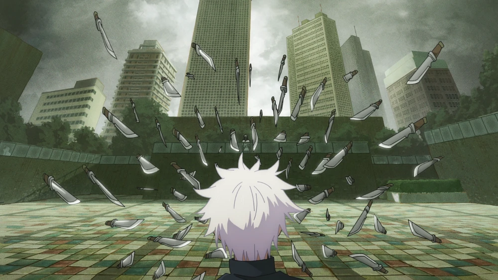
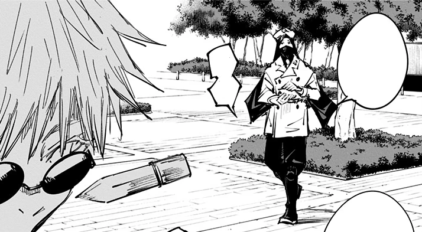
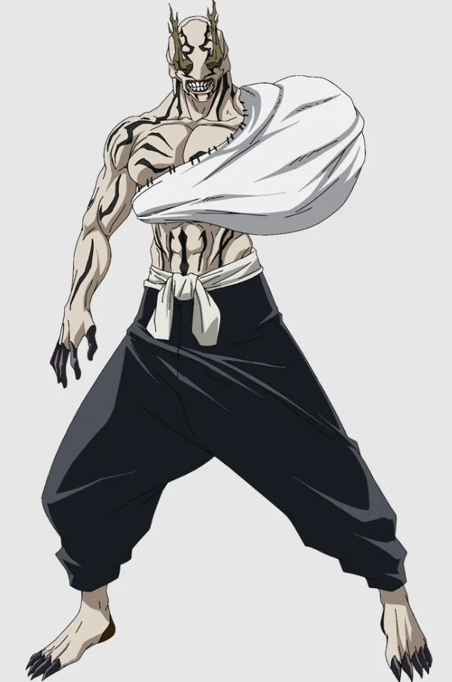
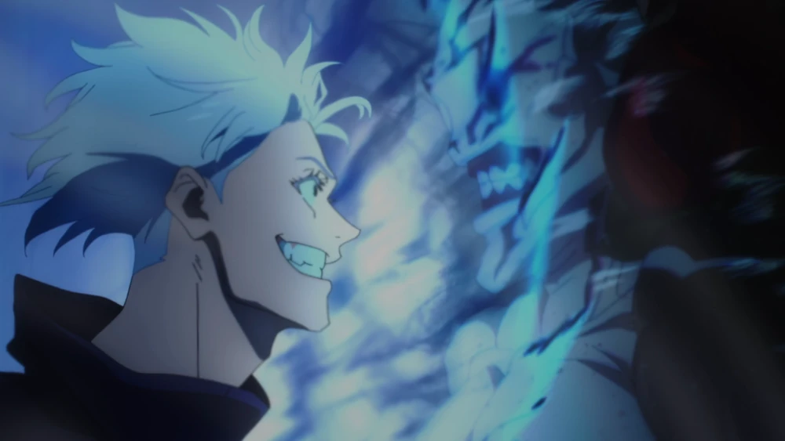
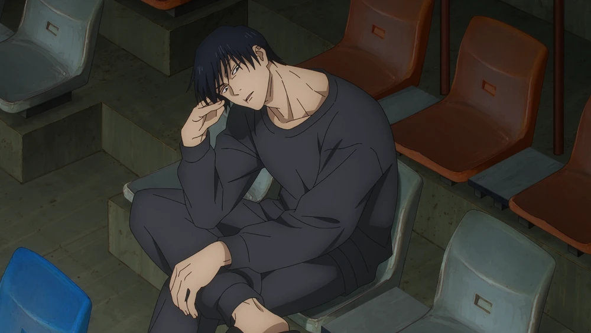
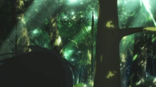

Satoru GOJO
Exorciste de classe S
Genre: M
Taille: 190cm
"Sur la terre comme au ciel, je suis le seul qui puisse
être vénéré." - Satoru Gojo à Toji Fushiguro
Formation
Expérience
Compétences
Langues
Cenres d'interêt
Contact
Linkedin

FORMATION
2005 - 2007
:
Élève à
Tokyo Jujutsu High (École d'Exorcisme de Tokyo)
×
Contactez-moi à cette addresse mail :
sika-junior.n.goran@efrei.net
EXPÉRIENCE PROFESSIONNELLE
×
Chef du clan Gojo
Professeur à Tokyo Jujutsu High

Exorciste de Tokyo Jujutsu High
Exemples d'adversaires vaincus :
Bayer : membre de la faction Q
 
Hanami : fléau de classe S
 
J'ai battu Hanami lors de l'incident de Shibuya fomenté par le maître des fléaux Suguru Geto en utilisant mon Infini.
Toji Fushiguro
 
Ce combat remonte à l'époque où j'étais encore élève exorciste. Toji avait assassiné Riko Amanai, autrefois destinée à servir Tengen. Je l'ai éliminé en utilisant le sort d'Inversion et mon Violet.
PROFIL
À ma naissance, le 7 décembre 1989, l'équilibre des forces a été troublé. De ce fait une prime à été mise sur ma tête et j'ai été ciblé par des maîtres des fléaux. Toutefois, ma puissance était telle que ces derniers n'ont rien pu faire contre moi. Cela marqua le début d'une ère victorieuse pour les exorcistes sur les fléaux.
Je suis l'actuel chef de la famille Gojo et un descendant d'un des plus grands exorcistes et esprit vengeur du Japon, Sugawara no Michizane. J'ai hérité du Pouvoir de l'Infini et du Sixième Œil. Mon objectif est de réformer le monde de l'occulte et d'en changer les dogmes grâce à l'éducation. Je veux former une nouvelle génération d'exorcistes qui, j'espère, deviendront un jour mes égaux.
COMPÉTENCES
Combat corps-à-corps
Exorcisme
Pouvoir de l'infini
Sixième oeil
Extension du territoire : Sphère de l'infini
Sort d'inversion
Rayon noir
Tactiques de combat
LANGUES
Japonais
Anglais
Français
CENTRES D'INTERÊT
Shopping
|
Cinéma
|
Fan de Digimon